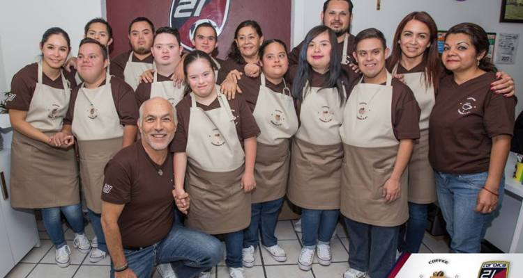

Ser un negocio reconocido en la ciudad de Guatemala y en la región, ser la mejor opción para las personas que quieran adquirir nuestros productos ya que contamos con una gran variedad de cafés, postres, panes entre otros alimentos y bebidas. Tenemos un claro compromiso de mejoramiento continuo en toda nuestro servicio
